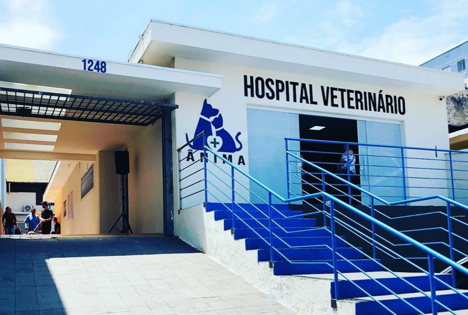
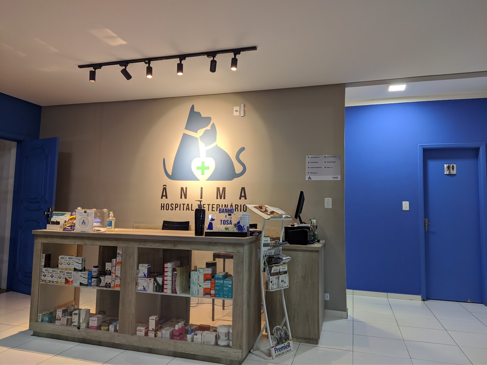
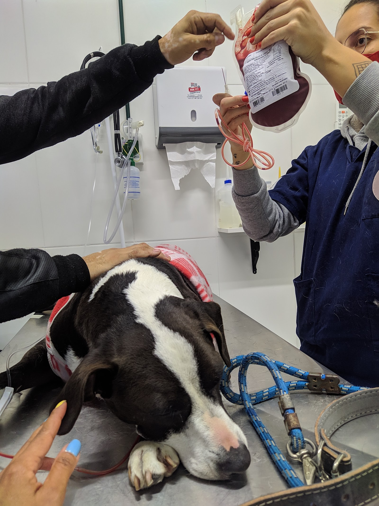
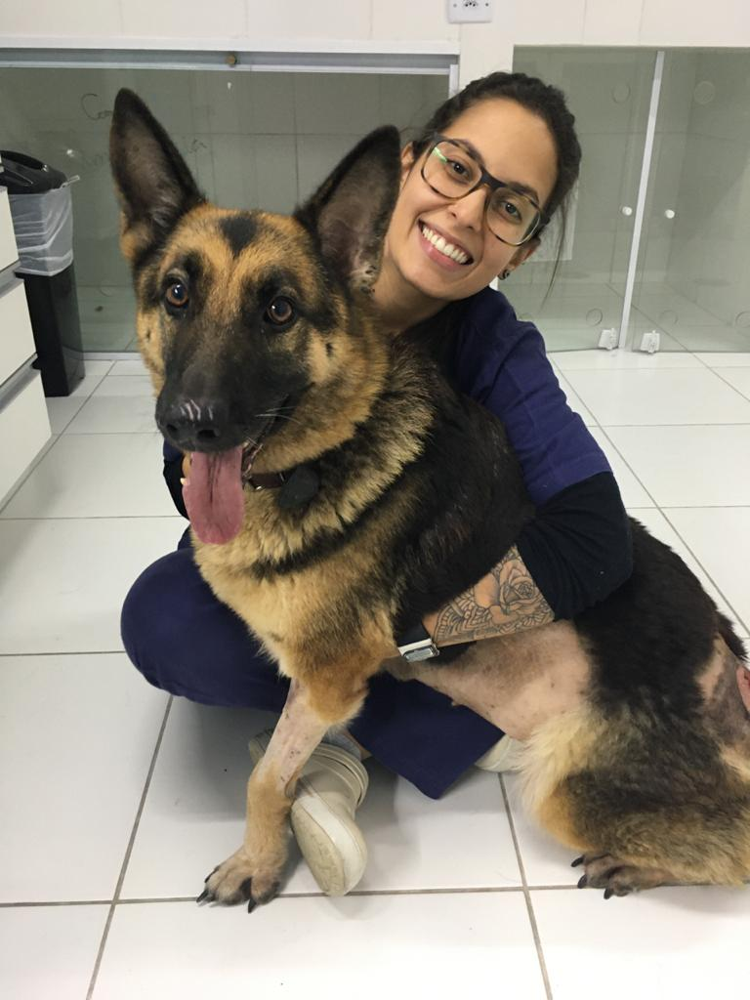
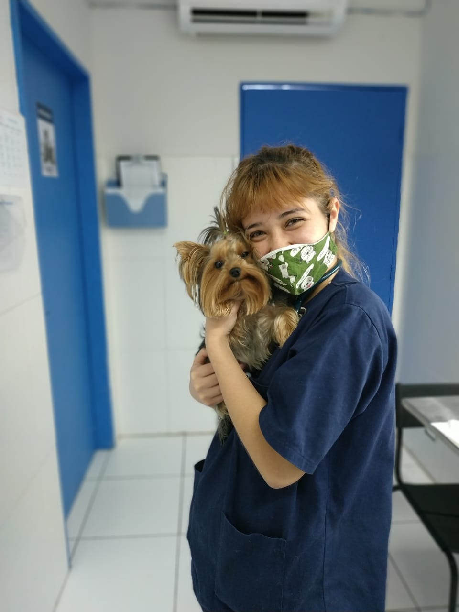
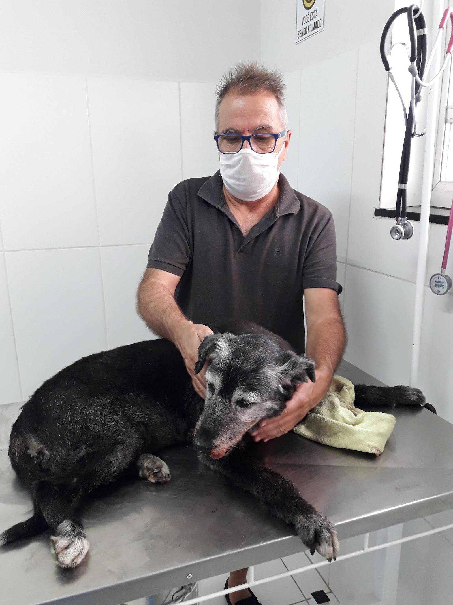
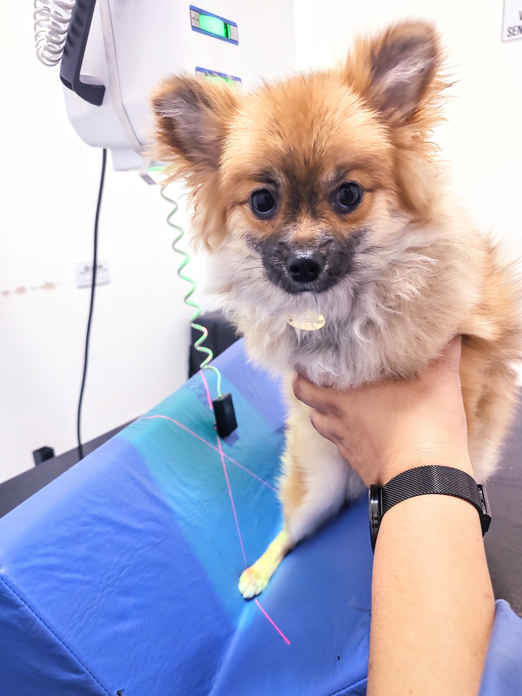
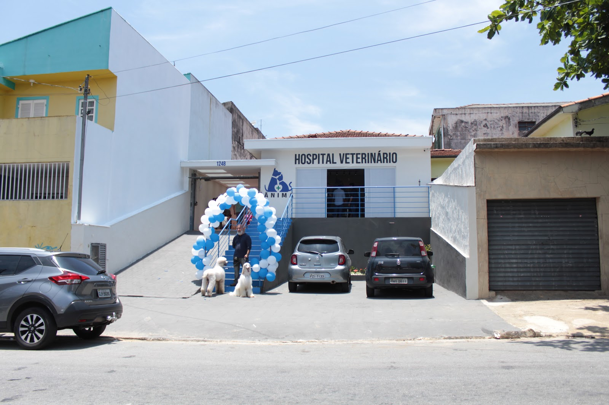

Hospital veterinário 24 horas em Itaquera — raio-X, ultrassom, banco de sangue e UTI para as horas em que esperar não é opção. Todos os dias, inclusive quando o resto da cidade já fechou.

Uma clínica tem um consultório. Um hospital tem setores. Na parede da nossa recepção existe uma placa que qualquer tutor pode ler ao chegar — e ela lista, preto no branco, o que temos aqui dentro:
É por isso que, quando seu pet precisa de um exame de imagem, uma cirurgia ou uma noite de internação, ele não é encaminhado para outro lugar. Resolve-se aqui — a qualquer hora.
Emergência de verdade não avisa a hora que vai chegar. Por isso mantemos, permanentemente, sala de emergência dedicada, internação e a estrutura de um hospital de referência — incluindo algo que quase nenhuma clínica de bairro tem coragem ou capacidade de oferecer:
“Banco de sangue e transfusão — recurso de hospital, disponível quando a vida do seu pet depende disso.”

Estrutura de hospital não significa frieza de hospital. A tecnologia é séria; a forma como a gente segura o seu pet, não tem nada de protocolar.



“Meu agradecimento à Drª Daniela, obrigada por todo carinho, cuidado e profissionalismo com a nossa amada Maya. Em um dos momentos mais difíceis das nossas vidas, ela foi luz, acolhimento e conforto.”
“Precisei de atendimento emergencial e, embora meu ‘filho’ (Sushi) ainda esteja em tratamento, ele já está muito melhor. As doutoras Amanda, Daniela e Karine foram essenciais em todo o processo.”
“Maravilhosa experiência. Recomendo muito. A gente percebe que sabe o que faz, tratando os pets com muito carinho e atenção, vale muito a pena!”

Da vacina de rotina à emergência que não pode esperar — o mesmo endereço resolve. Sem estrada, sem encaminhamento, sem “volte amanhã”.
Todos os dias da semana, inclusive domingo e feriado. Sala de emergência dedicada e equipe de plantão permanente.
Recurso de hospital de referência, disponível quando a vida do seu pet depende de tempo. Poucas clínicas oferecem.
Diagnóstico por imagem feito aqui dentro — sem encaminhar o pet para outro endereço e perder tempo precioso.
Monitoramento contínuo e sala de emergência dedicada para os casos que precisam ficar sob observação da equipe.
Cirurgias e castração em ambiente controlado, com protocolo e estrutura de hospital de verdade.
Consultório 1 e 2 para o cuidado de rotina — check-up, vacinas e acompanhamento do seu pet ao longo da vida.
Do banho ao acabamento de tosa fina — o mesmo capricho que você vê nas fotos, agendável pelo WhatsApp.
Medicamentos, suplementos e nutrição clínica na própria recepção — você sai com o tratamento na mão.
Diferencial prático e raro em Itaquera: vagas na frente do hospital para você chegar rápido com o seu pet.

Infraestrutura de hospital de referência em plena Itaquera — sem precisar pegar estrada até a região central da cidade quando o seu pet mais precisa.
Fale com o Hospital Ânima Itaquera agora — atendimento 24 horas, todos os dias, com a estrutura de um hospital de verdade a poucos minutos de você.
Chamar no WhatsApp — resposta rápida